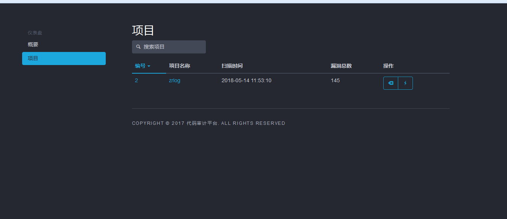
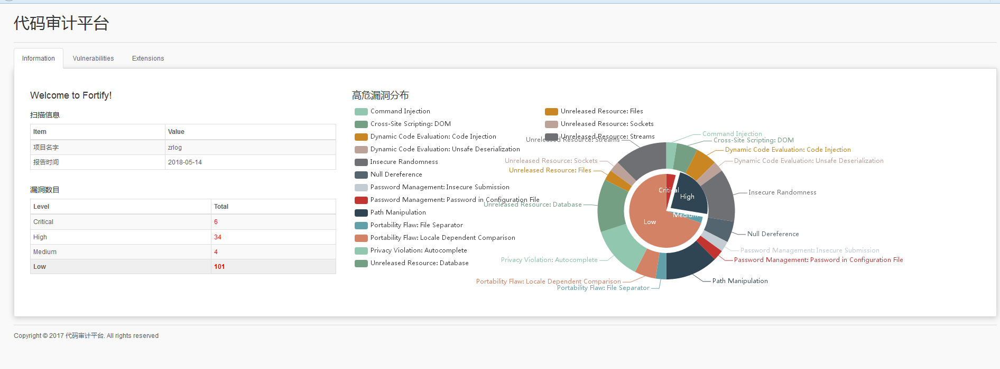
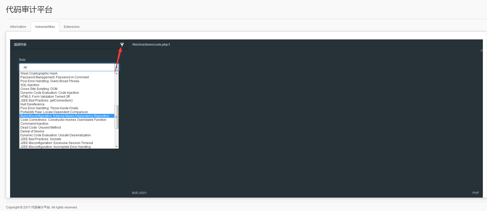
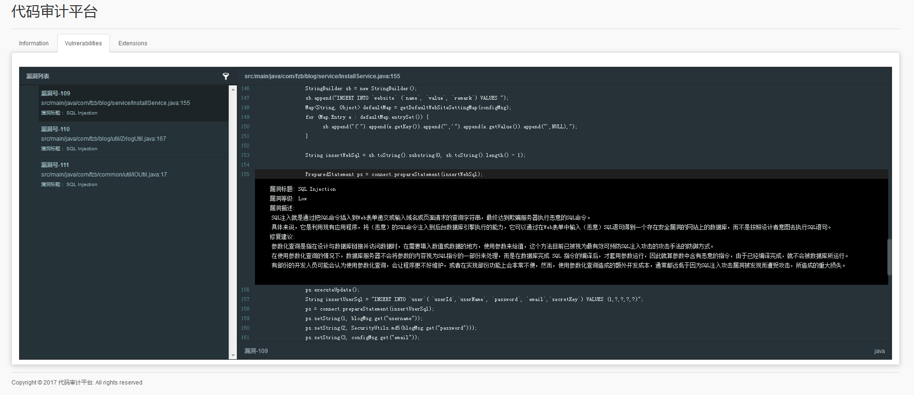
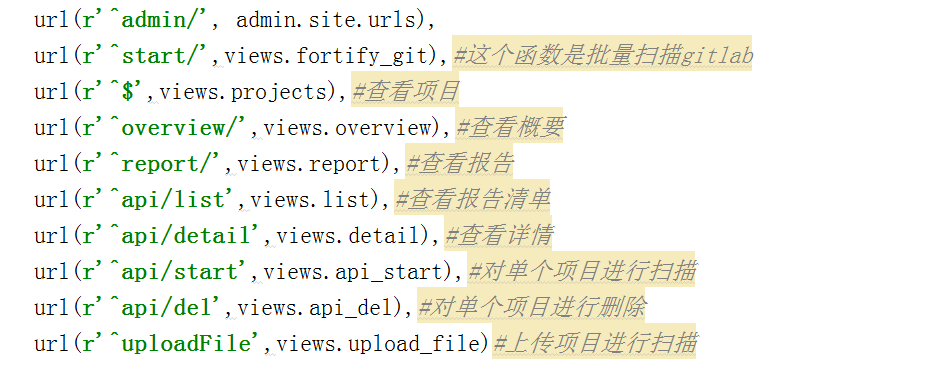

为了保证公司业务的安全，需要对公司内部系统的代码定时进行代码审计，由于我用的是网上公(po)开(jie)版，不能进行批量扫描，所以就自己写了一个自动化系统。
项目的地址：https://github.com/yingshang/fortify画风大概是这样的，由于我懒，我直接拿了cobra的模板直接渲染= =当然了只有展示项目，概要我想了想还是不写了，这个玩意只是做统计，但是在我看来，还不如直接丢进禅道里面统计。我禅道的代码没有放出来，你们可以自己写，就是直接把代码审计平台的数据直接保存在禅道的数据库里面。


dockerfile安装，我这边没有用MYSQL，直接用sqlite，因为docker用mysql很麻烦，当然啦，我是不会提供fortify的= =毕竟是公开版
FROM centos
RUN yum install -y epel-release
RUN yum install -y python-pip redis gcc python-dev vim unzip
COPY fortify_linux /opt/fortify_linux
RUN pip install --upgrade pip
RUN pip install django==1.9.2 celery
RUN pip install django-celery redis anyjson requests celery-with-redis
RUN mkdir /data/ && mkdir /data/fortify && mkdir /data/fortify/report
COPY fortify /opt/fortify
COPY 1.sh /opt/1.sh
RUN chmod +x /opt/1.sh
RUN chmod 777 -R /data
RUN chmod 777 -R /opt/fortify_linux
RUN ln -s /opt/fortify_linux/bin/sourceanalyzer /usr/local/bin/sourceanalyzer
RUN ln -s /opt/fortify_linux/bin/ReportGenerator /usr/local/bin/ReportGenerator
RUN cd /opt/fortify && python manage.py makemigrations && python manage.py migrate
EXPOSE 8000
ENTRYPOINT ./opt/1.sh
1.sh
redis-server &
python /opt/fortify/manage.py celery -A fortify worker -l info --beat &
python /opt/fortify/manage.py runserver 0.0.0.0:8000
好了说说核心处理代码，这个是调用fortify的命令接口去运行检测过程，然后根据fortify生成的XML进行数据处理保存到数据库。
#fortify 运行的代码
source_path = "/data/fortify/"+myfile
fortify_fpr = "/data/fortify/report/"+myfile+'.fpr'
fortify_xml = "/data/fortify/report/"+ myfile + '.xml'
del_fpr = 'sourceanalyzer -b '+myfile+' -clean'
build = 'sourceanalyzer -b '+ myfile +' -Xmx1200M -Xms600M -Xss24M -source 1.8 -machine-output '+source_path
scan = 'sourceanalyzer -b '+ myfile + ' -scan -format fpr -f '+fortify_fpr+' -machine-output '
report = 'ReportGenerator -format xml -f '+fortify_xml+' -source '+fortify_fpr+' -template DeveloperWorkbook.xml'
然后我的架构是Django+redis+celery，我这边设置了4个队列，超过四个就等待。
info这个文件是有漏洞标题、漏洞描述、修复建议，基本的漏洞描述有了，如果没有自己添加。
下面这些就是他的函数作用
